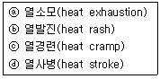
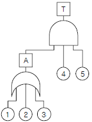
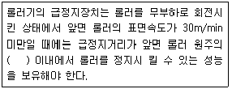
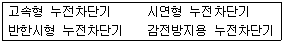
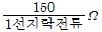
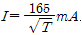
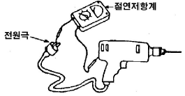
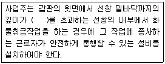

산업안전기사 (2014-03-02 기출문제)
1과목: 안전관리론
1. 각자의 위험에 대한 감수성 향상을 도모하기 위하여 삼각 및 원포인트 위험예지훈련을 실시하는 것은?
- 1인 위험예지훈련
- 자문자답 위험예지훈련
- TBM 위험예지훈련
- 시나리오 역할연기훈련
(정답률: 70%)

2. 다음 중 참가자에 일정한 역할을 주어 실제적으로 연기를 시켜봄으로써 자기의 역할을 보다 확실히 인식할 수 있도록 체험학습을 시키는 교육방법은?
- Role playing
- Brain storming
- Action playing
- Fish Bowl playing
(정답률: 90%)
3. 다음 중 안전모의 성능시험에 있어서 AE, ABE종에만 한하여 실시하는 시험은?
- 내관통성시험, 충격흡수성시험
- 난연성시험, 내수성시험
- 내관통성시험, 내전압성시험
- 내전압성시험, 내수성시험
(정답률: 71%)
4. 다음 중 산업안전보건법령상 안전.보건표지에 있어 금지 표지의 종류가 아닌 것은?
- 금연
- 접촉금지
- 보행금지
- 차량통행금지
(정답률: 62%)
5. 다음 중 산업안전보건법령상 근로자에 대한 일반건강 진단의 실시 시기가 올바르게 연결된 것은?
- 사무직에 종사하는 근로자 : 1년에 1회 이상
- 사무직에 종사하는 근로자 : 2년에 1회 이상
- 사무직외의 업무에 종사하는 근로자 : 6월에 1회 이상
- 사무직외의 업무에 종사하는 근로자 : 2년에 1회 이상
(정답률: 85%)
6. 사고요인이 되는 정신적 요소 중 개성적 결함 요인에 해당하지 않는 것은?
- 방심 및 공상
- 도전적인 마음
- 과도한 집착력
- 다혈질 및 인내심 부족
(정답률: 54%)
7. 재해의 빈도와 상해의 강약도를 혼합하여 집계하는 지표를 무엇이라 하는가?
- 강도율
- 안전활동률
- safe-T-score
- 종합재해지수
(정답률: 83%)
8. 다음 중 재해 사례 연구의 순서를 올바르게 나열한 것은?
- 직접원인과 문제점의 확인 → 근본적 문제의 결정 → 대책수립 → 사실의 확인
- 근본적 문제의 결정 → 직접원인과 문제점의 확인 → 대책수립 → 사실의 확인
- 사실의 확인 → 직접원인과 문제점의 확인 → 근본적 문제점의 결정 → 대책수립
- 사실의 확인 → 근본적 문제점의 결정 → 직접원인과 문제점의 확인 → 대책수립
(정답률: 78%)
9. 다음 중 하인리히가 제시한 1:29:300의 재해구성비율에 관한 설명으로 틀린 것은?
- 총 사고발생건수는 300건이다.
- 중상 또는 사망은 1회 발생된다.
- 고장이 포함되는 무상해사고는 300건 발생된다.
- 인적, 물적 손실이 수반되는 경상이 29건 발생된다.
(정답률: 87%)
10. 안전.보건교육의 단계별 교육과정 중 근로자가 지켜야 할 규정의 숙지를 위한 교육에 해당하는 것은?
- 지식교육
- 태도교육
- 문제해결교육
- 기능교육
(정답률: 59%)
11. 다음 중 교육형태의 분류에 있어 가장 적절하지 않은 것은?
- 교육의도에 따라 형식적교육, 비형식적교육
- 교육성격에 따라 일반교육, 교양교육, 특수교육
- 교육방법에 따라 가정교육, 학교교육, 사회교육
- 교육내용에 따라 실업교육, 직업교육, 고등교육
(정답률: 64%)
12. 안전교육 방법 중 OJT(On the Job Training) 특징과 거리가 먼 것은?
- 상호 신뢰 및 이해도가 높아진다.
- 개개인의 적절한 지도훈련이 가능하다.
- 사업장의 실정에 맞게 실제적 훈련이 가능하다.
- 관련 분야의 외부 전문가를 강사로 초빙하는 것이 가능하다.
(정답률: 86%)
13. 다음 중 일반적으로 시간의 변화에 따라 야간에 상승하는 생체리듬은?
- 맥박수
- 염분량
- 혈압
- 체중
(정답률: 82%)
14. 다음 중 산소결핍이 예상되는 맨홀 내에서 작업을 실시 할 때 사고 방지 대책으로 적절하지 않은 것은?
- 작업 시작 전 및 작업 중 충분한 환기 실시
- 작업 장소의 입장 및 퇴장시 인원점검
- 방독마스크의 보급과 착용 철저
- 작업장과 외부와의 상시 연락을 위한 설비 설치
(정답률: 85%)
15. 재해로 인한 직접비용으로 8000만원이 산재보상비로 지급되었다면 하인리히 방식에 따를 때 총 손실비용은 얼마 인가?
- 16000만원
- 24000만원
- 32000만원
- 40000만원
(정답률: 72%)
16. 다음 중 산업안전보건법령상 안전관리자의 업무에 해당되지 않은 것은? (단, 그 밖에 안전에 관한 사항으로서 고용노동부장관이 정하는 사항은 제외한다.)
- 업무수행 내용의 기록.유지
- 근로자의 건강관리, 보건교육 및 건강증진 지도
- 안전분야에 한정된 산업재해에 관한 통계의 유지.관리를 위한 지도.조언
- 법 또는 법에 따른 명령으로 정한 안전에 관한 사항의 이행에 관한 보좌 및 조언ㆍ지도
(정답률: 65%)
17. 경험한 내용이나 학습된 행동을 다시 생각하여 작업에 적용하지 아니하고 방치함으로서 경험의 내용이나 인상이 약해지거나 소멸되는 현상을 무엇이라 하는가?
- 착각
- 훼손
- 망각
- 단절
(정답률: 80%)
18. 다음 중 안전점검 종류에 있어 점검주기에 의한 구분에 해당하는 것은?
- 육안점검
- 수시점검
- 형식점검
- 기능점검
(정답률: 78%)
19. 다음 중 매슬로우(Maslow)의 욕구 5단계 이론에 해당되지 않는 것은?
- 생리적 욕구
- 안전 욕구
- 감성적 욕구
- 존경의 욕구
(정답률: 76%)
20. 산업안전보건법령상 사업 내 안전.보건교육에서 근로자 정기 안전.보건교육의 교육내용에 해당하지 않은 것은? (단, 기타 산업안전보건법 및 일반관리에 관한 사항은 제외한다.)
- 건강증진 및 질병 예방에 관한 사항
- 산업보건 및 직업병 예방에 관한 사항
- 유해.위험 작업환경 관리에 관한 사항
- 작업공정의 유해.위험과 재해 예방대책에 관한 사항
(정답률: 54%)
2과목: 인간공학 및 시스템안전공학
21. 다음 중 화학설비의 안전성 평가에서 정량적 평가의 항목에 해당되지 않는 것은?
- 조작
- 취급물질
- 훈련
- 설비용량
(정답률: 64%)
22. 다음 중 의자 설계의 일반 원리로 가장 적합하지 않은 것은?
- 디스크 압력을 줄인다.
- 등근육의 정적 부하를 줄인다.
- 자세고정을 줄인다.
- 요부측만을 촉진한다.
(정답률: 86%)
23. 3개 공정의 소음수준 측정 결과 1공정은 100dB에서 1시간, 2공정은 95dB에서 1시간, 3공정은 90dB에서 1시간이 소요될 때 총 소음량(TND)과 소음설계의 적합성을 올바르게 나열한 것은? (단, 90dB에 8시간 노출할 때를 허용기준으로 하며, 5dB 증가할 때 허용시간은 1/2로 감소되는 법칙을 적용한다.)
- TND = 0.78, 적합
- TND = 0.88, 적합
- TND = 0.98, 적합
- TND = 1.08, 부적합
(정답률: 60%)
24. 다음 중 열중독증(heat illness)의 강도를 올바르게 나열 한 것은?

- ⓒ < ⓑ < ⓐ < ⓓ
- ⓒ < ⓑ < ⓓ < ⓐ
- ⓑ < ⓒ < ⓐ < ⓓ
- ⓑ < ⓓ < ⓐ < ⓒ
(정답률: 75%)
25. 인간-기계시스템 설계의 주요 단계 중 기본설계 단계에서 인간의 성능 특성(human performance requirements)과 거리가 먼 것은?
- 속도
- 정확성
- 보조물 설계
- 사용자 만족
(정답률: 53%)
26. 다음 중 FTA에서 사용되는 minimal cut set에 관한 설명으로 틀린 것은?
- 사고에 대한 시스템의 약점을 표현한다.
- 정상사상(Top event)을 일으키는 최소한의 집합이다.
- 시스템에 고장이 발생하지 않도록 하는 모든 사상의 집합이다.
- 일반적으로 Fussell Algorithm을 이용한다.
(정답률: 65%)
27. 다음 중 반응시간이 가장 느린 감각은?
- 청각
- 시각
- 미각
- 통각
(정답률: 63%)
28. FT도에서 ①~⑤ 사상의 발생확률이 모두 0.06 일 경우 T 사상의 발생 확률은 약 얼마인가?

- 0.00036
- 0.00061
- 0.142625
- 0.2262
(정답률: 65%)
29. 다음 중 연구 기준의 요건에 대한 설명으로 옳은 것은?
- 적절성 : 반복 실험시 재현성이 있어야 한다.
- 신뢰성 : 측정하고자 하는 변수 이외의 다른 변수의 영향을 받아서는 안 된다.
- 무오염성 : 의도된 목적에 부합하여야 한다.
- 민감도 : 피실험자 사이에서 볼 수 있는 예상 차이점에 비례하는 단위로 측정해야 한다.
(정답률: 62%)
30. 한 대의 기계를 120시간 동안 연속 사용한 경우 9회의 고장이 발생하였고, 이때의 총고장수리시간이 18시간이었다. 이 기계의 MTBF(Mean time between failure)는 약 몇 시간인가?
- 10.22
- 11.33
- 14.27
- 18.54
(정답률: 63%)
31. 다음 중 아날로그 표시장치를 선택하는 일반적인 요구 사항으로 틀린 것은?
- 일반적으로 동침형보다 동목형을 선호한다.
- 일반적으로 동침과 동목은 혼용하여 사용하지 않는다.
- 움직이는 요소에 대한 수동 조절을 설계할 때는 바늘(pointer)을 조정하는 것이 눈금을 조정하는 것보다 좋다.
- 중요한 미세한 움직임이나 변화에 대한 정보를 표시할 때는 동침형을 사용한다.
(정답률: 55%)
32. 인간공학의 연구를 위한 수집자료 중 동공확장 등과 같은 것은 어느 유형으로 분류되는 자료라 할 수 있는가?
- 생리지표
- 주관적 자료
- 강도 척도
- 성능 자료
(정답률: 83%)
33. 다음 중 음성통신에 있어 소음환경과 관련하여 성격이 다른 지수는?
- AI(Articulation Index)
- MAMA(Minimum Audible Movement Angle)
- PNC(Preferred Noise Criteria Curves)
- PSIL(Preferred-Octave Speech Interference Level)
(정답률: 63%)
34. 어떤 설비의 시간당 고장률이 일정하다고 할 때 이 설비의 고장간격은 다음 중 어떠한 확률분포를 따르는가?
- t 분포
- 와이블 분포
- 지수 분포
- 아이링(Eyring) 분포
(정답률: 76%)
35. 인간 신뢰도 분석기법 중 조작자 행동 나무(Operator Action Tree) 접근 방법이 환경적 사건에 대한 인간의 반응을 위해 인정하는 활동 3가지가 아닌 것은?
- 감지
- 추정
- 진단
- 반응
(정답률: 54%)
36. 다음 중 FT의 작성방법에 관한 설명으로 틀린 것은?
- 정성.정량적으로 해석.평가하기 전에는 FT를 간소화 해야 한다.
- 정상(Top)사상과 기본사상과의 관계는 논리게이트를 이용해 도해한다.
- FT를 작성하려면, 먼저 분석대상 시스템을 완전히 이해하여야 한다.
- FT 작성을 쉽게 하기 위해서는 정상(Top)사상을 최대한 광범위하게 정의한다.
(정답률: 72%)
37. 다음 중 인간의 과오(Human error)를 정량적으로 평가하고 분석하는데 사용하는 기법으로 가장 적절한 것은?
- THERP
- FMEA
- CA
- FMECA
(정답률: 70%)
38. 다음 중 위험 조정을 위해 필요한 방법(위험조정기술)과 가장 거리가 먼 것은?
- 위험 회피(avoidance)
- 위험 감축(reduction)
- 보류(retention)
- 위험 확인(confirmation)
(정답률: 48%)
39. 다음 중 산업안전보건법령상 유해ㆍ위험방지계획서의 심사 결과에 따른 구분.판정의 종류에 해당하지 않는 것은?
- 보류
- 부적정
- 적정
- 조건부 적정
(정답률: 75%)
40. 다음 중 은행 창구나 슈퍼마켓의 계산대에 적용하기에 가장 적합한 인체 측정 자료의 응용원칙은?
- 평균치 설계
- 최대 집단치 설계
- 극단치 설계
- 최소 집단치 설계
(정답률: 78%)
3과목: 기계위험방지기술
41. 재료에 대한 시험 중 비파괴시험이 아닌 것은?
- 방사선투과시험
- 자분탐상시험
- 초음파탐상시험
- 피로시험
(정답률: 83%)
42. 다음 중 산업안전보건법령상 승강기의 종류에 해당하지 않는 것은?
- 리프트
- 에스컬레이터
- 화물용 승강기
- 인화(人貨) 공용 승강기
(정답률: 70%)
43. 다음 중 정(chisel) 작업시 안전수칙으로 적합하지 않은 것은?
- 반드시 보안경을 사용한다.
- 담금질한 재료는 정으로 작업하지 않는다.
- 정 작업에서 모서리 부분은 크기를 3R 정도로 한다.
- 철강재를 정으로 절단작업을 할 때 끝날 무렵에는 세게 때려 작업을 마무리 한다.
(정답률: 80%)
44. 다음 중 산업안전보건법령상 안전인증대상 방호장치에 해당하지 않는 것은?(관련 규정 개정전 문제로 여기서는 기존 정답인 1번을 누르면 정답 처리됩니다. 자세한 내용은 해설을 참고하세요.)
- 산업용 로봇 안전매트
- 압력용기 압력방출용 파열판
- 압력용기 압력방출용 안전밸브
- 방폭구조(防爆構造) 전기기계.기구 및 부품
(정답률: 75%)
45. 다음 중 휴대용 동력 드릴 작업시 안전사항에 관한 설명으로 틀린 것은?
- 드릴 손잡이를 견고 하게 잡고 작업하여 드릴손잡이 부위가 회전하지 않고 확실하게 제어 가능하도록 한다.
- 절삭하기 위하여 구멍에 드릴날을 넣거나 뺄 때 반발에 의하여 손잡이 부분이 튀거나 회전하여 위험을 초래하지 않도록 팔을 드릴과 직선으로 유지한다.
- 드릴이나 리머를 고정시키거나 제거하고자 할 때 금속성 망치 등을 사용하여 확실히 고정 또는 제거한다.
- 드릴을 구멍에 맞추거나 스핀들의 속도를 낮추기 위해서 드릴날을 손으로 잡아서는 안 된다.
(정답률: 78%)
46. 산업안전보건법에 따라 로봇을 운전하는 경우 근로자가 로봇에 부딪칠 위험이 있을 때에는 높이 얼마 이상의 방책을 설치하여야 하는가?
- 90cm
- 120cm
- 150cm
- 180cm
(정답률: 79%)
47. 다음 중 지게차의 안정도에 관한 설명으로 틀린 것은?
- 지게차의 등판능력을 표시한다.
- 좌우 안정도와 전후 안정도가 있다.
- 주행과 하역작업의 안정도가 다르다.
- 작업 또는 주행시 안정도 이하로 유지해야 한다.
(정답률: 61%)
48. 산업안전보건법에 따라 선반 등으로부터 돌출하여 회전하고 있는 가공물을 작업할 때 설치하여야 할 방호조치로 가장 적합한 것은?
- 안전난간
- 울 또는 덮개
- 방진장치
- 건널다리
(정답률: 79%)
49. 다음 중 금형의 설치.해체작업의 일반적인 안전사항으로 틀린 것은?
- 금형의 설치용구는 프레스의 구조에 적합한 형태로 한다.
- 금형을 설치하는 프레스의 T홈 안길이는 설치 볼트 직경 이하로 한다.
- 고정볼트는 고정 후 가능하면 나사선이 3 ~ 4개 정도 짧게 남겨 슬라이드 면과의 사이에 협착이 발생하지 않도록 해야 한다.
- 금형 고정용 브래킷(물림판)을 고정시킬 때 고정용 브래킷은 수평이 되게 하고, 고정볼트는 수직이 되게 고정하여야 한다.
(정답률: 71%)
50. 프레스의 안전대책 중 손을 금형 사이에 집어넣을 수 없도록 하는 본질적 안전화를 위한 방식(no-hand in die)에 해당하는 것은?
- 수인식
- 광전자식
- 방호울식
- 손쳐내기식
(정답률: 54%)
51. 인장강도가 25kg/mm2인 강판의 안전율이 4 라면 이 강판의 허용응력(kg/mm2 )은 얼마인가?
- 4.25
- 6.25
- 8.25
- 10.25
(정답률: 79%)
52. 다음 중 금속 등의 도체에 교류를 통한 코일을 접근시켰을 때, 결함이 존재하면 코일에 유기되는 전압이나 전류가 변하는 것을 이용한 검사방법은?
- 자분탐상검사
- 초음파탐상검사
- 와류탐상검사
- 침투형광탐상검사
(정답률: 73%)
53. 가스집합용접장치에는 가스의 역류 및 역화를 방지할 수 있는 안전기를 설치하여야 하는데 다음 중 저압용 수봉식 안전기가 갖추어야 할 요건으로 옳은 것은?
- 수봉 배기관을 갖추어야 한다.
- 도입관은 수봉식으로 하고, 유효수주는 20mm 미만 이어야 한다.
- 수봉배기관은 안전기의 압력을 2.5kg/cm2 에 도달하기 전에 배기시킬 수 있는 능력을 갖추어야 한다.
- 파열판은 안전기 내의 압력이 50kg/cm2 에 도달하기 전에 파열되어야 한다.
(정답률: 44%)
54. 다음 중 리프트의 안전장치로 활용하는 것은?
- 그리드(grid)
- 아이들러(idler)
- 스크레이퍼(scraper)
- 리미트스위치(limit switch)
(정답률: 71%)
55. 기계의 방호장치 중 과도하게 한계를 벗어나 계속적으로 감아올리는 일이 없도록 제한하는 장치는?
- 일렉트로닉 아이
- 권과방지장치
- 과부하방지장치
- 해지장치
(정답률: 72%)
56. 완전 회전식 클러치 기구가 있는 프레스의 양수기동식 방호장치에서 누름버튼을 누를 때부터 사용하는 프레스의 슬라이드가 하사점에 도달할 때까지의 소요 최대시간이 0.15초이면 안전거리는 몇 mm 이상이어야 하는가?
- 150
- 220
- 240
- 300
(정답률: 59%)
57. 회전수가 300rpm, 연삭숫돌의 지름이 200mm 일 때 숫돌의 원주속도는 몇 m/min 인가?
- 60.0
- 94.2
- 150.0
- 188.5
(정답률: 70%)
58. 다음 중 자동화설비를 사용하고자 할 때 기능의 안전화를 위하여 검토할 사항과 가장 거리가 먼 것은?
- 부품변형에 의한 오동작
- 사용압력 변동시의 오동작
- 전압강하 및 정전에 따른 오동작
- 단락 또는 스위치 고장시의 오동작
(정답률: 59%)
59. 다음 중 보일러의 방호장치와 가장 거리가 먼 것은?
- 언로드밸브
- 압력방출장치
- 압력제한스위치
- 고저수위조절장치
(정답률: 78%)
60. 다음 설명 중 ( )안에 알맞은 내용은?

- 1/5
- 1/4
- 1/3
- 1/2.5
(정답률: 76%)
4과목: 전기위험방지기술
61. 누전경보기는 사용전압이 600V 이하인 경계전로의 누설전류를 검출하여 당해 소방대상물의 관계자에게 경보를 발하는 설비를 말한다. 다음 중 누전경보기의 구성으로 옳은 것은?
- 감지기 - 발신기
- 변류기 - 수신부
- 중계기 - 감지기
- 차단기 - 증폭기
(정답률: 49%)
62. 방폭전기기기의 등급에서 위험장소의 등급분류에 해당되지 않는 것은?
- 3종 장소
- 2종 장소
- 1종 장소
- 0종 장소
(정답률: 77%)
63. 인체의 표면적이 0.5m2이고 정전용량은 0.02pF/cm2 이다. 3300V의 전압이 인가되어 있는 전선에 접근하여 작업을 할 때 인체에 축척되는 정전기 에너지(J)는?
- 5.445×10-2
- 5.445×10-4
- 2.723×10-2
- 2.723×10-4
(정답률: 59%)
64. 방폭전기설비 계획 수립시의 기본 방침에 해당되지 않는 것은?
- 가연성가스 및 가연성액체의 위험특성 확인
- 시설장소의 제조건 검토
- 전기설비의 선정 및 결정
- 위험장소 종별 및 범위의 결정
(정답률: 38%)
65. 전격 사고에 관한 사항과 관계가 없는 것은?
- 감전사고의 피해 정도는 접촉시간에 따라 위험성이 결정된다.
- 전압이 동일한 경우 교류가 직류보다 더 위험하다.
- 교류에 감전된 경우 근육에 경련과 수축이 일어나서 접촉시간이 길어지게 된다.
- 주파수가 높을수록 최소감지전류는 감소한다.
(정답률: 62%)
66. 제전기의 설명 중 잘못된 것은?
- 전압인가식은 교류 7000V를 걸어 방전을 일으켜 발생한 이온으로 대전체의 전하를 중화시킨다.
- 방사선식은 특히 이동물체에 적합하고, α 및 β선원이 사용되며, 방사선 장해, 취급에 주의를 요하지 않아도 된다.
- 이온식은 방사선의 전리 작용으로 공기를 이온화시키는 방식, 제전 효율은 낮으나 폭발위험지역에 적당하다.
- 자기방전식은 필름의 권취, 셀로판제조, 섬유공장 등에 유효하나, 2kV 내외의 대전이 남는 결점이 있다.
(정답률: 57%)
67. 전기설비에 접지를 하는 목적에 대하여 틀린 것은?
- 누설전류에 의한 감전방지
- 낙뢰에 의한 피해방지
- 지락사고 시 대지전위 상승유도 및 절연강도 증가
- 지락사고 시 보호계전기 신속동작
(정답률: 67%)
68. 다음 보기의 누전차단기에서 정격감도전류에서 동작시간이 짧은 두 종류를 알맞게 고른 것은?

- 고속형 누전차단기, 시연형 누전차단기
- 반한시형 누전차단기, 감전방지용 누전차단기
- 반한시형 누전차단기, 시연형 누전차단기
- 고속형 누전차단기, 감전방지용 누전차단기
(정답률: 75%)
69. 복사선 중 전기성 안염을 일으키는 광선은?
- 자외선
- 적외선
- 가시광선
- 근적외선
(정답률: 57%)
70. 감전 등의 재해를 예방하기 위하여 고압기계.기구 주위에 관계자외 출입을 금하도록 울타리를 설치할 때, 울타리의 높이와 울타리로부터 충전부분까지의 거리의 합이 최소 몇 m 이상은 되어야 하는가?
- 5m 이상
- 6m 이상
- 7m 이상
- 9m 이상
(정답률: 58%)
71. 전기설비의 필요한 부분에 반드시 보호접지를 실시하여야 한다. 접지공사의 종류에 따른 접지저항과 접지선이 틀린 것은?
- 제1종 : 10Ω 이하, 공칭단면적 6mm2 이상의 연동선
- 제 종 2 :

이하, 공칭단면적 1.6mm2 이상의 연동선 - 제3종 : 100Ω 이하, 공칭단면적 2.5mm2 이상의 연동선
- 특별 제3종 : 10Ω 이하, 공칭단면적 2.5mm2 이상의 연동선
(정답률: 56%)
72. 피뢰침의 제한전압이 800kV, 충격절연강도가 1260kV라 할 때, 보호여유도는 몇 % 인가?
- 33.3
- 47.3
- 57.5
- 63.5
(정답률: 58%)
73. 정전기 방전현상에 해당되지 않는 것은?
- 연면방전
- 코로나방전
- 낙뢰방전
- 스팀방전
(정답률: 65%)
74. 심실세동을 일으키는 위험한계 에너지는 약 몇 J 인가? (단 심실세동 전류

, 통전시간 T = 1초, 인체의 전기저항 R = 800Ω 이다.)- 12
- 22
- 32
- 42
(정답률: 71%)
75. 다른 두 물체가 접촉할 때 접촉 전위차가 발생하는 원인으로 옳은 것은?
- 두 물체의 온도의 차
- 두 물체의 습도의 차
- 두 물체의 밀도의 차
- 두 물체의 일함수의 차
(정답률: 68%)
76. 전동기계, 기구에 설치하는 작업자의 감전방지용 누전차단기의 ㉮ 정격감전류(mA) 및 ㉯ 동작시간(초)의 최대값은?
- ㉮ 10 ㉯ 0.03
- ㉮ 20 ㉯ 0.01
- ㉮ 30 ㉯ 0.03
- ㉮ 50 ㉯ 0.1
(정답률: 75%)
77. 전동공구 내부회로에 대한 누전측정을 하고자 한다. 220V용 전동공구를 그림과 같이 절연저항 측정을 하였을 때 지시치가 최소 몇 MΩ 이상이 되어야 하는가?(오류 신고가 접수된 문제입니다. 반드시 정답과 해설을 확인하시기 바랍니다.)

- 0.1MΩ 이상
- 0.2MΩ 이상
- 0.4MΩ 이상
- 1.0MΩ 이상
(정답률: 55%)
78. 통전중의 전력기기나 배선이 부근에서 일어나는 화재를 소화할 때 주수(注水)하는 방법으로 옳지 않은 것은?
- 화염이 일어나지 못하도록 물기둥인 상태로 주수
- 낙하를 시작해서 퍼지는 상태로 주수
- 방출과 동시에 퍼지는 상태로 주수
- 계면 활성제를 섞은 물이 방출과 동시에 퍼지는 상태로 주수
(정답률: 57%)
79. 방폭전기설비의 용기내부에 보호가스를 압입하여 내부 압력을 유지함으로써 폭발성가스 또는 증기가 내부로 유입하지 않도록 된 방폭구조는?
- 내압 방폭구조
- 압력 방폭구조
- 안전증 방폭구조
- 유입 방폭구조
(정답률: 43%)
80. 내압(耐壓)방폭 구조의 화염일주한계를 작게 하는 이유로 가장 알맞은 것은?
- 최소점화에너지를 높게 한기 위하여
- 최소점화에너지를 낮게 한기 위하여
- 최소점화에너지 이하로 열을 식히기 위하여
- 최소점화에너지 이상으로 열을 높이기 위하여
(정답률: 50%)
5과목: 화학설비위험방지기술
81. 다음 중 질식소화에 해당하는 것은?
- 가연성 기체의 분출화재시 주 밸브를 닫는다.
- 가연성 기체의 연쇄반응을 차단하여 소화한다.
- 연료 탱크를 냉각하여 가연성 가스의 발생속도를 작게한다.
- 연소하고 있는 가연물이 존재하는 장소를 기계적으로 폐쇄하여 공기의 공급을 차단한다.
(정답률: 68%)
82. 산업안전보건법령상 위험물 또는 위험물이 발생하는 물질을 가열.건조하는 경우 내용적이 얼마인 건조설비는 건조실을 설치하는 건축물의 구조를 독립된 단층 건물로 하여야 하는가?
- 0.3m3 이하
- 0.3m3 ~ 0.5m3
- 0.5m3 ~ 0.75m3
- 1m3 이상
(정답률: 60%)
83. 액화 프로판 310kg 을 내용적 50L 용기에 충전할 때 필요한 소요 용기의 수는 약 몇 개인가? (단, 액화 프로판의 가스정수는 2.35 이다.)
- 15
- 17
- 19
- 21
(정답률: 61%)
84. 다음 중 온도가 증가함에 따라 열전도도가 감소하는 물질은?
- 에탄
- 프로판
- 공기
- 메틸알콜
(정답률: 50%)
85. 다음 중 가연성가스가 밀폐된 용기 안에서 폭발할 때 최대폭발압력에 영향을 주는 인자로 볼 수 없는 것은?
- 가연성가스의 농도
- 가연성가스의 초기온도
- 가연성가스의 유속
- 가연성가스의 초기압력
(정답률: 62%)
86. 다음 중 두 종류 가스가 혼합될 때 폭발 위험이 가장 높은 것은?
- 염소, 아세틸렌
- CO2, 염소
- 암모니아, 질소
- 질소, CO2
(정답률: 72%)
87. 다음 중 분진 폭발에 관한 설명으로 틀린 것은?
- 폭발한계 내에서 분진의 휘발성분이 많을수록 폭발하기 쉽다.
- 분진이 발화 폭발하기 위한 조건은 가연성, 미분상태, 공기 중에서의 교반과 유동 및 점화원의 존재이다.
- 가스폭발과 비교하여 연소의 속도나 폭발의 압력이 크고, 연소시간이 짧으며, 발생에너지가 크다.
- 폭발한계는 입자의 크기, 입도분포, 산소농도, 함유 수분, 가연성가스의 혼입 등에 의해 같은 물질의 분진에서도 달라진다.
(정답률: 69%)
88. 화재 감지에 있어서 열감지 방식 중 차동식에 해당하지 않는 것은?
- 공기식
- 열전대식
- 바이메탈식
- 열반도체식
(정답률: 64%)
89. 다음 중 금수성 물질에 대하여 적응성이 있는 소화기는?
- 무상강화액소화기
- 이산화탄소소화기
- 할로겐화합물소화기
- 탄산수소염류분말소화기
(정답률: 56%)
90. 다음 중 기체의 자연발화온도 측정법에 해당하는 것은?
- 중량법
- 접촉법
- 예열법
- 발열법
(정답률: 57%)
91. 메탄 1vol%, 헥산 2vol%, 에틸렌 2vol%, 공기 95vol% 로 된 혼합가스의 폭발하한계 값(vol%)은 약 얼마인가? (단, 메탄, 헥산, 에틸렌의 폭발하한계 값은 각각 5.0, 1.1, 2.7vol% 이다.)
- 2.4
- 1.8
- 12.8
- 21.7
(정답률: 55%)
92. 다음 중 관의 지름을 변경하고자 할 때 필요한 관 부속품은?
- reducer
- elbow
- plug
- valve
(정답률: 75%)
93. 산업안전보건법령상 물질안전보건자료를 작성할 때에 혼합물로 된 제품들이각각의 제품을 대표하여 하나의 물질 안전보건자료를 작성할 수 있는 충족 요건 중 각 구성성분이 함량변화는 얼마 이하이어야 하는가?
- 5%
- 10%
- 15%
- 30%
(정답률: 54%)
94. 다음 중 연소 및 폭발에 관한 용어의 설명으로 틀린 것은?
- 폭굉 : 폭발충격파가 미반응 매질 속으로 음속보다 큰 속도로 이동하는 폭발
- 연소점 : 액체 위에 증기가 일단 점화된 후 연소를 계속할 수 있는 최고온도
- 발화온도 : 가연성 혼합물이 주위로부터 충분한 에너지를 받아 스스로 점화할 수 있는 최저온도
- 인화점 : 액체의 경우 액체 표면에서 발생한 증기 농도가 공기 중에서 연소 하한농도가 될 수 있는 가장 낮은 액체온도
(정답률: 56%)
95. 폭발발생의 필요조건이 충족되지 않은 경우에는 폭발을 방지할 수 있는데, 다음 중 저온액화가스와 물 등의 고온액에 의한 증기폭발 발생의 필요조건으로 옳지 않은 것은?
- 폭발의 발생에는 액과 액이 접촉할 필요가 있다.
- 고온액의 계면온도가 응고점 이하가 되어 응고되어도 폭발의 가능성은 높아진다.
- 증기폭발의 발생은 확률적 요소가 있고, 그것은 저온 액화가스의 종류와 조성에 의해 정해진다.
- 액과 액의 접촉 후 폭발 발생까지 수~수백ms의 지연이 존재하지만 폭발의 시간 스케일은 5ms 이하이다.
(정답률: 50%)
96. 탱크내 작업시 복장에 관한 설명으로 옳지 않은 것은?
- 정전기방지용 작업복을 착용할 것
- 작업원은 불필요하게 피부를 노출시키지 말 것
- 작업모를 쓰고 긴팔의 상의를 반듯하게 착용할 것
- 수분의 흡수를 방지하기 위하여 유지가 부착된 작업복을 착용할 것
(정답률: 71%)
97. 다음 중 플레어스텍에 부착하여 가연성 가스와 공기의 접촉을 방지하기 위하여 밀도가 작은 가스를 채워주는 안전 장치는?
- molecular seal
- flame arrester
- seal drum
- purge
(정답률: 46%)
98. 산업안전보건법령상 안전밸브 등의 전단.후단에는 차단밸브를 설치하여서는 아니 되지만 다음 중 자물쇠형 또는 이에 준하는 형식의 차단밸브를 설치할 수 있는 경우로 틀린 것은?
- 인접한 화학설비 및 그 부속설비에 안전밸브 등이 각 각 설치되어 있고, 해당 화학설비 및 그 부속설비의 연결배관에 차단밸브가 없는 경우
- 안전밸브 등의 배출용량의 4분의 1 이상에 해당하는 용량의 자동압력조절밸브와 안전밸브 등이 직렬로 연결된 경우
- 화학설비 및 그 부속설비에 안전밸브 등이 복수방식으로 설치되어 있는 경우
- 열팽창에 의하여 상승된 압력을 낮추기 위한 목적으로 안전밸브가 설치된 경우
(정답률: 64%)
99. 다음 중 공정안전보고서에 포함하여야 할 공정안전자료의 세부내용이 아닌 것은?
- 유해.위험설비의 목록 및 사양
- 방폭지역 구분도 및 전기단선도
- 유해.위험물질에 대한 물질안전보건자료
- 설비점검.검사 및 보수계획, 유지계획 및 지침서
(정답률: 52%)
100. 다음 중 화학물질 및 물리적 인자의 노출기준에 있어 유해물질대상에 대한 노출기준의 표시단위가 잘못 연결된 것은?
- 분진 : ppm
- 증기 : ppm
- 가스 : mg/m3
- 고온 : 습구흑구온도지수
(정답률: 52%)
6과목: 건설안전기술
101. 철골구조의 앵커볼트매립과 관련된 사항 중 옳지 않은 것은?
- 기둥중심은 기준선 및 인접기둥의 중심에서 3mm 이상 벗어나지 않을 것
- 앵커 볼트는 매립 후에 수정하지 않도록 설치할 것
- 베이스플레이트의 하단은 기준 높이 및 인접기둥의 높이에서 3mm 이상 벗어나지 않을 것
- 앵커 볼트는 기둥중심에서 2mm 이상 벗어나지 않은 것
(정답률: 44%)
102. 터널붕괴를 방지하기 위한 지보공 점검사항과 가장 거리가 먼 것은?
- 부재의 긴압의 정도
- 부재의 손상.변형.부식.변위 탈락의 유무 및 상태
- 기둥침하의 유무 및 상태
- 경보장치의 작동상태
(정답률: 75%)
103. 다음은 항만하역작업 시 통행설비의 설치에 관한 내용이다. ( )안에 알맞은 숫자는?

- 1.0m
- 1.2m
- 1.3m
- 1.5m
(정답률: 61%)
104. 연약지반의 이상현상 중 하나인 히빙(heaving)현상에 대한 안전대책이 아닌 것은?
- 흙막이벽의 관입깊이를 깊게 한다.
- 굴착 지면에 토사 등으로 하중을 가한다.
- 흙막이 배면의 표토를 제거하여 토압을 경감시킨다.
- 주변 수위를 높인다.
(정답률: 57%)
1⑤. 콘크리트 타설작업과 관련하여 준수하여야 할 사항으로 가장 거리가 먼 것은?
- 당일의 작업을 시작하기 전에 해당 작업에 관한 거푸집 동바리 등의 변형.변위 및 지반의 침하 유무 등을 점검하고 이상이 있는 경우 보수할 것
- 콘크리트를 타설하는 경우에는 편심이 발생하지 않도록 골고루 분산하여 타설할 것
- 진동기의 사용은 많이 할수록 균일한 콘크리트를 얻을 수 있으므로 가급적 많이 사용할 것
- 설계도서상의 콘크리트 양생기간을 준수하여 거푸집 동바리 등을 해체할 것
(정답률: 80%)
106. 부두ㆍ안벽 등 하역작업을 하는 장소에서는 부두 또는 안벽의 선을 따라 통로를 설치하는 경우에는 폭을 최소 얼마 이상으로 해야 하는가?
- 70cm
- 80cm
- 90cm
- 100cm
(정답률: 73%)
107. 터널 지보공을 조립하거나 변경하는 경우에 조치하여야 하는 사항으로 옳지 않은 것은?
- 목재의 터널 지보공은 조립시 각 부재에 작용하는 긴압 정도를 체크하여 그 정도가 최대한 차이나도록 한다.
- 강(鋼)아치 지보공의 조립은 연결볼트 및 띠장 등을 사용하여 주재 상호간을 튼튼하게 연결할 것
- 기둥에는 침하를 방지하기 위하여 받침목을 사용하는 등의 조치를 할 것
- 주재(主材)를 구성하는 1세트의 부재는 동일 평면 내에 배치할 것
(정답률: 74%)
108. 52m 높이로 강관비계를 세우려면 지상에서 몇 미터까지 2개의 강관으로 묶어 세워야 하는가?
- 11m
- 16m
- 21m
- 26m
(정답률: 58%)
109. 신품의 추락방지망 중 그물코의 크기 10cm인 매듭방망의 인장강도 기준으로 옳은 것은
- 110kgf 이상
- 200kgf 이상
- 360kgf 이상
- 400kgf 이상
(정답률: 75%)
110. 콘크리트 타설을 위한 거푸집동바리의 구조검토시 가장 선행되어야 할 작업은?
- 각 부재에 생기는 응력에 대하여 안전한 단면을 산정 한다.
- 하중.외력에 의하여 각 부재에 생기는 응력을 구한다.
- 가설물에 작용하는 하중 및 외력의 종류, 크기를 산정 한다.
- 사용할 거푸집동바리의 설치간격을 결정한다.
(정답률: 62%)
111. 클램쉘(Clam shell)의 용도로 옳지 않은 것은?
- 잠함안의 굴착에 사용된다.
- 수면아래의 자갈, 모래를 굴착하고 준설선에 많이 사용된다.
- 건축구조물의 기초 등 정해진 범위의 깊은 굴착에 적합하다.
- 단단한 지반의 작업도 가능하며 작업속도가 빠르고 특히 암반굴착에 적합하다.
(정답률: 66%)
112. 표준관입시험에 대한 내용으로 옳지 않은 것은?
- N치(N-value)는 지반을 30cm 굴진하는데 필요한 타격횟수를 의미한다.
- 50/3의 표기에서 50은 굴진수치, 3은 타격횟수를 의미 한다.
- 63.5kg 무게의 추를 76cm 높이에서 자유낙하하여 타격하는 시험이다.
- 사질지반에 적용하며, 점토지반에서는 편차가 커서 신뢰성이 떨어진다.
(정답률: 50%)
113. 지반조사 보고서 내용에 해당되지 않는 항목은?
- 지반공학적 조건
- 표준관입시험치, 콘관입저항치 결과분석
- 시공예정인 흙막이 공법
- 건설할 구조물 등에 대한 지반특성
(정답률: 59%)
114. 흙막이 가시설 공사시 사용되는 각 계측기 설치 목적으로 옳지 않은 것은?
- 지표침하계 - 지표면 침하량 측정
- 수위계 - 지반 내 지하수위의 변화 측정
- 하중계 - 상부 적재하중 변화 측정
- 지중경사계 - 지중의 수평 변위량 측정
(정답률: 66%)
115. 산업안전보건기준에 관한 규칙에 따른 철골공사 작업시 작업을 중지해야 할 경우는?
- 강우량 1.5mm/hr
- 풍속 8m/sec
- 강설량 5mm/hr
- 지진 진도 1.0
(정답률: 63%)
116. 폭풍시 옥외에 설치되어 있는 주행크레인에 대하여 이탈방지를 위한 조치가 필요한 풍속 기준은?
- 순간풍속이 20m/sec 초과할 때
- 순간풍속이 25m/sec 초과할 때
- 순간풍속이 30m/sec 초과할 때
- 순간풍속이 35m/sec 초과할 때
(정답률: 63%)
117. 철골조립작업에서 안전한 작업발판과 안전난간을 설치 하기가 곤란한 경우 작업원에 대한 안전대책으로 가장 알맞은 것은?
- 안전대 및 구명로프 사용
- 안전모 및 안전화 사용
- 출입금지 조치
- 작업중지 조치
(정답률: 72%)
118. 철근콘크리트 구조물의 해체를 위한 장비가 아닌 것은?
- 램머(Rammer)
- 압쇄기
- 철제 해머
- 핸드 브레이커(Hand Breaker)
(정답률: 52%)
119. 낙하물방지망 또는 방호선반을 설치하는 경우에 수평면과의 각도 기준으로 옳은 것은?
- 10° 이상 20° 이하
- 20° 이상 30° 이하
- 25° 이상 35° 이하
- 35° 이상 45° 이하
(정답률: 69%)
120. 강풍시 타워크레인의 작업제한과 관련된 사항으로 타워크레인의 운전 작업을 중지해야 하는 순간풍속 기준으로 옳은 것은?(관련 규정 개정전 문제로 여기서는 기존 정답인 2번을 누르면 정답 처리됩니다. 자세한 내용은 해설을 참고하세요.)
- 순간풍속이 매초 당 10 미터 초과
- 순간풍속이 매초 당 20 미터 초과
- 순간풍속이 매초 당 30 미터 초과
- 순간풍속이 매초 당 40 미터 초과
(정답률: 70%)